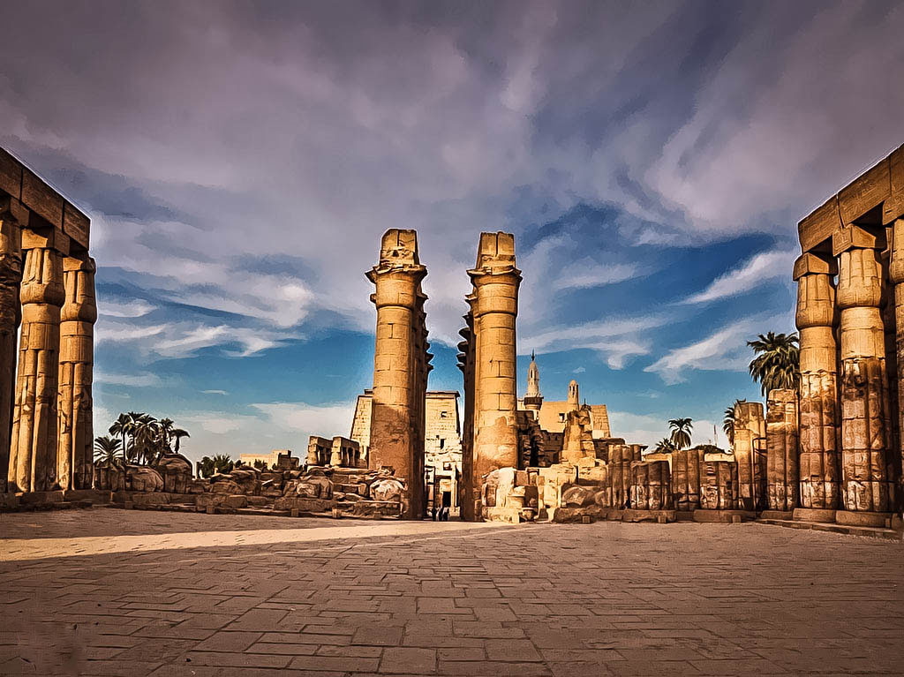

Luxor
Many festivals were celebrated in Thebes. The Temple of Luxor was the center of the most important one, the festival of Opet. Built largely by Amenhotep III and Rameses II, it appears that the temple's purpose was for a suitable setting for the rituals of the festival.
Once the center of the ancient world, Luxor is the most important destination for any visitor interested in ancient Egyptian history. This outdoor museum has the largest collection of historical monuments in Egypt, distributed throughout the City of Luxor on the East side of the Nile, the town of Karnak north of Luxor, and Thebes on the west side of the Nile.
The Luxor area of Upper Egypt was the Thebes of the ancient Egyptians - the capital of Egypt during the Middle and New Kingdoms. Today it is famous for its temples. Next to Cairo, this is the city holding the most impressive Pharaonic monuments. And they're bountiful too. Valley of the Kings, the Theban Necropolis and Karnak are all a few miles away from the city of Luxor.
Must See:
Deir el Bahari
The Temple of Queen Hatshepsut at Deir El Bahari is composed of three rising terraces and ramps leading from a mountain backdrop toward the Nile.
Your entryway into the valleys is guarded by two huge seated statues. Standing over 50 feet high, The Colossi of Memnon are the only remains of a temple to Amenhotep III.
Temple of Luxor and Karnak
In the center of town you will find the Temple of Luxor , and the enormous Temple of Karnak. Luxor Temple, built by Amenhotep III and Ramses II, was dedicated to Amun-Ra, whose marriage to Mut was celebrated annually, when the sacred procession moved by boat from Karnak to Luxor Temple. Karnak Temple includes many singular temples, dedicated to Amun, his wife (Mut), and their son (Khonsu), the moon deity. The temple starts with the avenue of the Rams, representing Amun: symbol of fertility and growth.
Dendara Temple
While approaching the Temple of Dendara you will come upon two Roman fountains that end at a massive gateway. The enclosure walls are made of mud brick and date back to the Roman era. Inside the walls lie the temple with two birth houses, a Coptic Basilica, a sanatorium, a sacred lake and a temple dedicated to the Goddess Isis. Pepi I from the Old Kingdom rebuilt the temple and Thutmose III, Amenhotep III, Ramses II and III added to it along with the Greeks, Romans and Ptolemies.
The Colossi of Memnon
In the 18th dynasty, Amenhotep III built a mortuary temple in Thebes that was guarded by two gigantic statues on the outer gates. All that remains now are those two statues of Amenhotep.
They were named the "Colossi of Memnon" by the Greeks for the legendary hero of the Trojan War. Nature has damaged the statues but the impact is still impressive. They are hewn from single sandstone block measuring 20 meters high.
The Temple of Luxor
The Temple of Luxor was built mainly by Amenhotep II and Ramses II. The Temple was the focal point for rituals and festivals. One of the most important festivals celebrated there was the festival of Opet. During the 18th dynasty the festival lasted for a period of 11 days but by the 20th dynasty it lasted 27 days. The procession of images of the current royal family began at Karnak and ended at the temple of Luxor. By the late 18th Dynasty the journey was being made by barge, on the Nile River. The Temple of Luxor has a great pylon with carved episodes from the Battle of Kadesh when Ramses defeated the Hittites. There is the one red granite obelisk (a twin one is now at the Place de la Concorde in Paris).
The Valley of the Kings Luxor
The king's formal names and titles are inscribed in his tomb along with his images and statues. Beginning with the 18th Dynasty and ending with the 20th, the kings abandoned Memphis and begun building their tombs in Thebes . Most tombs were cut into the limestone and constructed with three corridors, an antechamber and a sunken sarcophagus chamber. These catacombs were harder to rob and were easily concealed. Construction usually lasted six years, and texts in the tombs are from the Book of the Dead, the Book of the Gates and the Book of the Underworld. Nearly all the tombs were robbed. Luckily, the priests collected and hid some of the mummies which have survived until now.
The Temple of Queen Hatshepsut
The mortuary temple of Queen Hatshepsut is one of the most famous in the world. The queen's architect, Senenmut, designed it. There was a tree lined avenue of sphinxes that led up to the temple with ramps leading from terrace to terrace. Reliefs on the south side of the middle terrace show the queen's expedition down the Red Sea to Punt. Along the front of the upper terrace is a series of Orisis statues.
The Valley of the Queens
Here, are between 75 and 80 tombs in the Valley of the Queens (Princes and Princesses) who belonged to the 18th, 19th and 20th Dynasties. The tombs are decorated only with paintings (no reliefs have been found). The walls of the tombs were covered with Nile mud and then the entire surface was whitewashed in preparation for the painting. The colors are vivid!